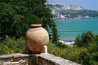

Balchik
It is famous with the Balchik Palace (Quiet Nest Palace) which is fully open to visitors. The palace was constructed between 1926 and 1937, during the Romanian control of the region, for the needs of Queen Marie of Romania.
building
pond
beautiful_garden
Christiandom
gateway
cactus
cactus2
petunia
jar
beach
beach2
residence
cypress
Balchik045
wine
Balchik053
Balchik054
fountain
greenery
fountain2- 
stone_ware
view2
beautiful_spot
botanical_garden
garden
yellow_lily
pink_lily
Balchik076
beach3
Balchik078
labyrinth
steps
panorama
view
statue
motive
palace
water_mill
cascade
nimfeum
Balchik103
Balchik104
chapel
cross
nimfeum2
cross2
rose_garden
magnolia
lake
garden
students
house
girls